DeltaBot: Multi-Axis Coordinated Motion Control
7-Servo Delta Robot with Cartesian/Kinematic Coordinate Systems, Spiral Cam Profiles, and PackML-Structured Unit/Equipment Architecture on a Rockwell ControlLogix 1756-L81E Platform
MCLM coordinated linear moves through the Cartesian workspace, then calls a cam-profile calculator and launches two MATC time-driven cam moves to trace a parametric 8π-revolution spiral in X/Y while Z steps. Each axis also owns its own Equipment Module with a PackML-aware CM00 procedure for jog/stop/error handling.
1. System Architecture & Project Tree
The DeltaBot controller is a 1756-L81E ControlLogix running Studio 5000 Logix Designer. The project was structured using the ISA-88/PackML conventions already proven on the earlier Simple Motion project: a single unit (UN01_ExampleMachine) holds the procedural logic, while each physical axis is wrapped in its own Equipment Module (EM). All motion runs over EtherNet/IP CIP Motion with Time Sync, so every servo drive is clocked from the same grand-master on the backplane and coordinated linear moves execute on a common time base.
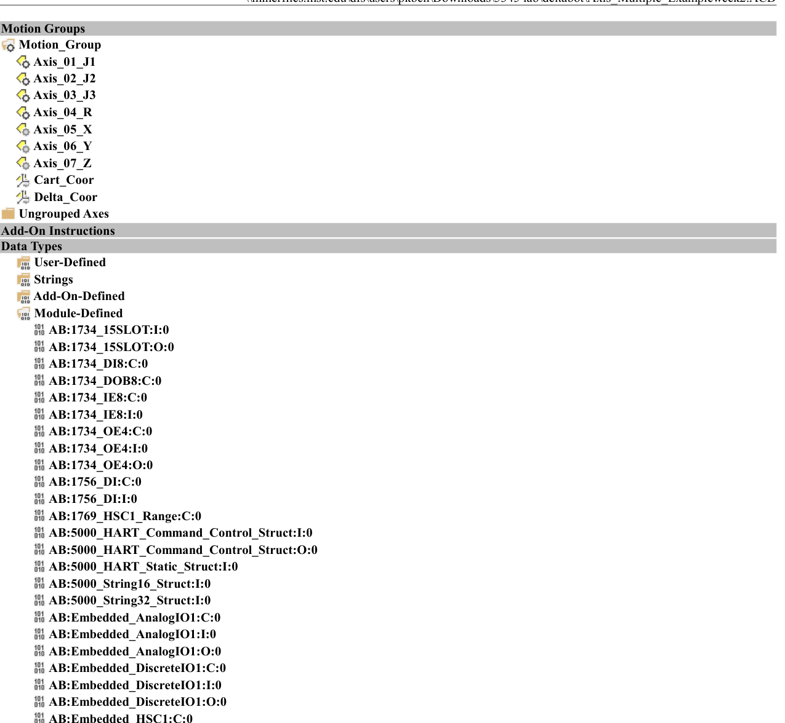
UN01_ExampleMachine with its unit procedures (UP00_Procedure, UP01_PackML, UP02_Transform, UP03_SpiralCalcPts, UP10_SpiralCamCalcPoints) and seven Equipment Modules EM01_Axis_J1…EM07_Axis_Z.Hardware layout
| Chassis slot / role | Catalog | Notes |
|---|---|---|
| Controller | 1756-L81E (ControlLogix 5580) | CIP Motion over Ethernet |
| Ethernet bridge | 1756-EN2TR | Device-level ring to Kinetix drives |
| R-axis servo drive | Kinetix 5700 2198-H015-ERS | Larger frame for rotary tool axis |
| J1 / J2 / J3 servo drives | Kinetix 5700 2198-H008-ERS ×3 | Three joint axes of the delta |
| Virtual axes | X, Y, Z | Used only inside Cart_Coor |
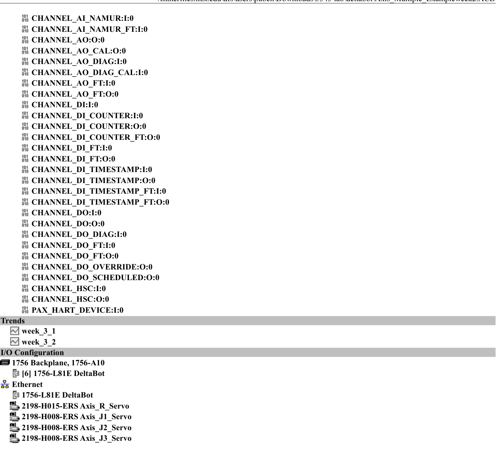
Axis_0N_Jn_Servo AXIS_CIP_DRIVE tags plus the rotary Axis_04_R_Servo, and three virtual AXIS_VIRTUAL tags Axis_05_X / Axis_06_Y / Axis_07_Z for the coordinate frame.2. Axes, Drives, and Coordinate Systems
The robot exposes seven motion axes and two coordinate systems:
| Tag | Type | Purpose |
|---|---|---|
Axis_01_J1, Axis_02_J2, Axis_03_J3 | CIP_DRIVE | Three delta upper arms (parallelogram joints) |
Axis_04_R | CIP_DRIVE | Tool/end-effector rotation |
Axis_05_X, Axis_06_Y, Axis_07_Z | VIRTUAL | Cartesian axes — members of Cart_Coor |
Cart_Coor | COORDINATE_SYSTEM | Cartesian target frame used by all MCLM moves |
Delta_Coor | COORDINATE_SYSTEM | Joint/mechanism frame — where J1/J2/J3 live |
The coupling between the two coordinate systems is provided by UP02_Transform (delta forward/inverse kinematics). MCLM operates in the Cartesian frame so the programmer specifies moves in tool-tip space; the transform routine resolves the required joint angles in real time. The three virtual Cartesian members are read back through Cart_Coor.ActualPosition[5..7] (X, Y, Z respectively — indexed in the coordinate system's member order).
3. Unit Program — UP00_Procedure & Motion Math
UP00_Procedure is the master choreography of the robot: a 14-rung ladder that sequences ten steps using a set-reset state pattern. Step transitions key off either the .PC (process-complete) bit of the preceding MCLM, the .DN of a wait timer, or the .DNs of the two MCCP cam-profile calculations. The same motion-math block is repeated at every linear-move step — once per step, live at every scan — so the accel/decel are recomputed from the current robot position rather than assumed.
Move-math pattern (identical at each MCLM step)
distance[0] := ABS(Cart_Coor.ActualPosition[5] - moveN[0]); // X error
distance[1] := ABS(Cart_Coor.ActualPosition[6] - moveN[1]); // Y error
distance[2] := ABS(Cart_Coor.ActualPosition[7] - moveN[2]); // Z error
accel := (MoveSpeed ** 2)
/ (0.5 * (distance[0] + distance[1] + distance[2]) / 3);The accel expression is a first-principles way of sizing the ramp: it picks the acceleration that exactly reaches MoveSpeed over half of the mean per-axis distance, so a short step uses a gentle ramp and a long step uses a stiff one. All moves then execute with:
- Coordinate System
Cart_Coor- Speed
MoveSpeed= 20.0 units/sec- Accel / Decel
accel(computed) — typically ≈ 6.0 units/sec²- Profile
- Trapezoidal
- Accel / Decel Jerk
- 100 % of Time (later tuned down to 50 % and 10 % — see §7)
- Termination Type
- 1 (Actual Tolerance — next step blocks on
.PC) - Merge
- Disabled
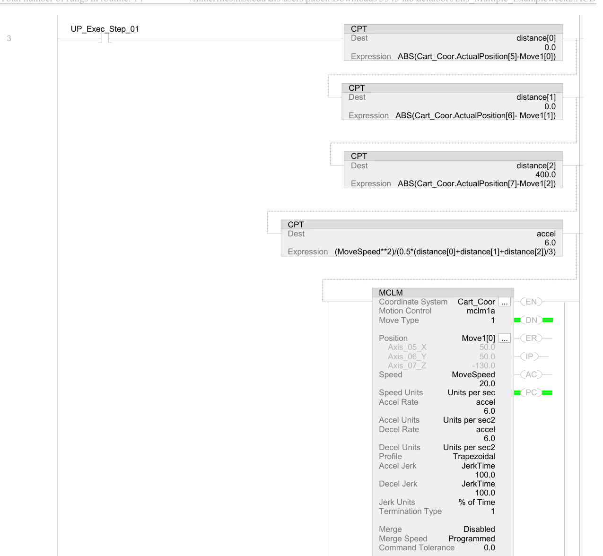
UP00_Procedure rung for Step 1 — three CPT blocks compute per-axis distances, a fourth CPT produces accel, and the MCLM executes the move to move1[0..2] = (50, 50, -130) in Cart_Coor.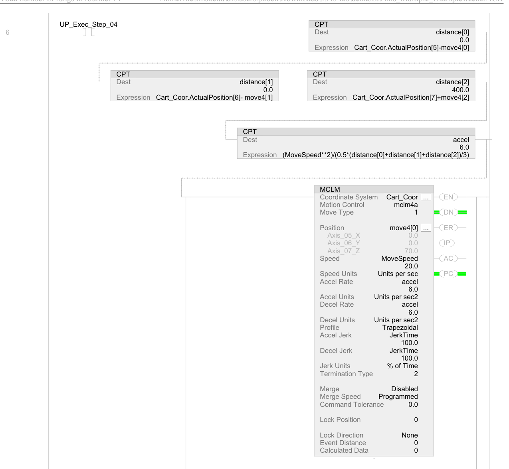
move3 = (0, 0, -10). The PackML-style UP_Exec_Step_03 ⇒ UP_Exec_Step_04 chain (Unlatch + Latch) is visible at the bottom of the rung.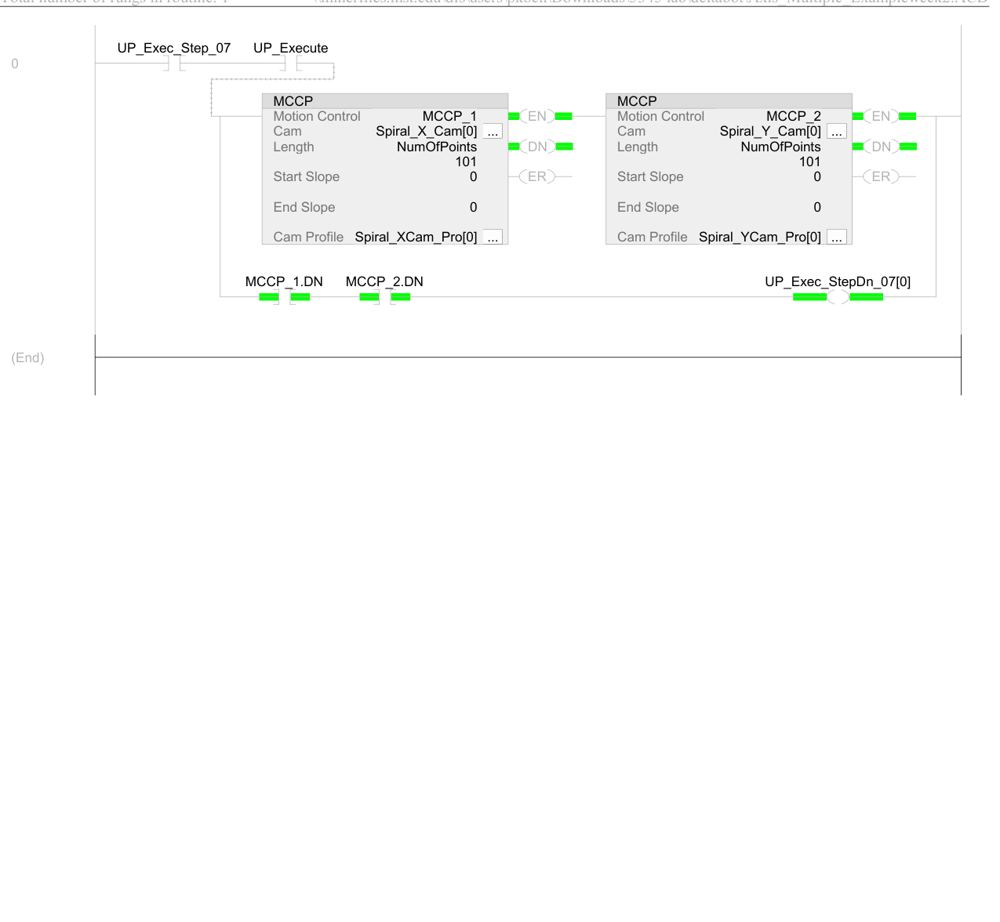
MCLM (target move10). On .PC it unlatches both UP_Exec_Step_11 and UP_Execute and latches UP_Idle, handing the PackML state machine back to Idle.Step targets summary
| Step | Action | X | Y | Z | Terminator |
|---|---|---|---|---|---|
| 1 | MCLM1 | 50 | 50 | −130 | mclm1.PC |
| 2 | Wait 1 s | — | waittmr.DN | ||
| 3 | MCLM3 | 0 | 0 | −10 | mclm3.PC |
| 4 | MCLM4 | 0 | 0 | 70 | mclm4.PC |
| 5 | MCLM5 | −50 | −50 | 0 | mclm5.PC |
| 6 | MCLM6 | 0 | 0 | −70 | mclm6.PC |
| 7 | JSR UP10_SpiralCamCalcPoints, UP03_SpiralCalcPts (spiral cam build & launch) | — | MCCP_1.DN & MCCP_2.DN | ||
| 8 | Extra step — spiral executing on X & Y (time-driven MATC), used as a timing dwell | — | step_08 array bits (one per axis) | ||
| 9 | MCLM9 | 0 | 0 | 40 | mclm9.PC |
| 10 | MCLM10 → latch UP_Idle | (return home) | mclm10.PC | ||
4. Spiral Cam Profile — UP10_SpiralCamCalcPoints & UP03_SpiralCalcPts
Steps 7–8 draw a parametric 2-revolution spiral in the X/Y plane. Rather than stream a coordinated path, the program builds two cam profiles (one for X, one for Y) as a function of a common time-base master, then runs MATC on each virtual axis to play the cam back in time-driven mode. This is a classic trick when the workspace path is periodic or analytic: the PLC computes the geometry once and the motion planner interpolates the rest.
UP10 — build the cam points (Structured Text)
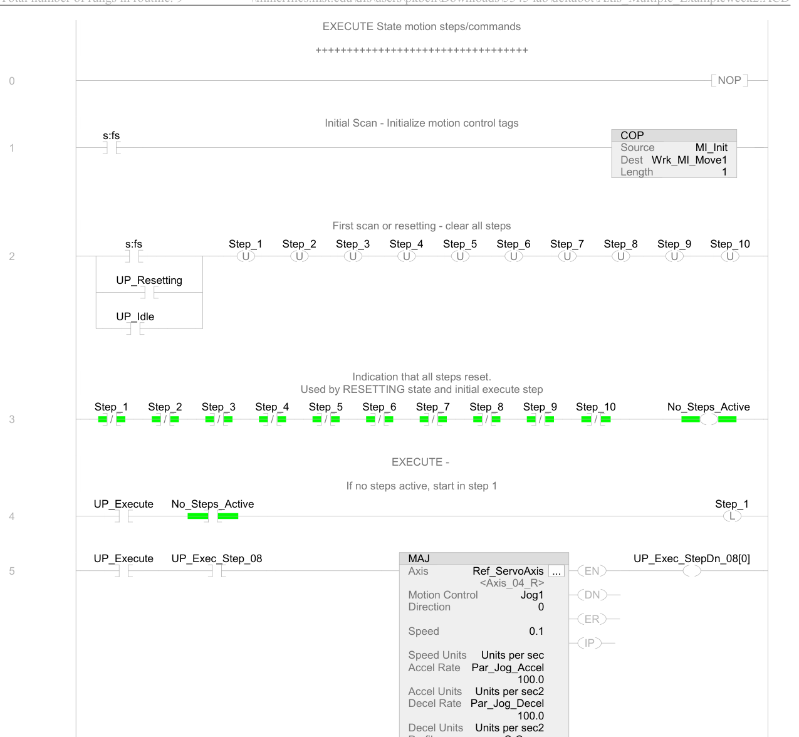
UP10_SpiralCamCalcPoints — 14-line structured-text routine that fills the Spiral_X_Cam and Spiral_Y_Cam CAM arrays with 101 points over 8π radians (two full spiral turns). Radius R = 2.0 grows linearly with θ, giving the classic Archimedean spiral r = Rθ.NumOfPoints := 101;
R := 2.0;
FOR Index := 0 TO NumOfPoints-1 DO
Theta := Index * (8 * pi) / NumOfPoints;
Spiral_X_Cam[Index].Master := Index;
Spiral_X_Cam[Index].Slave := R * Theta * COS(Theta);
Spiral_X_Cam[Index].SegmentType := 0; // linear
Spiral_Y_Cam[Index].Master := Index;
Spiral_Y_Cam[Index].Slave := R * Theta * SIN(Theta);
Spiral_Y_Cam[Index].SegmentType := 0;
END_FOR;UP03 — convert the point arrays into executable cam profiles
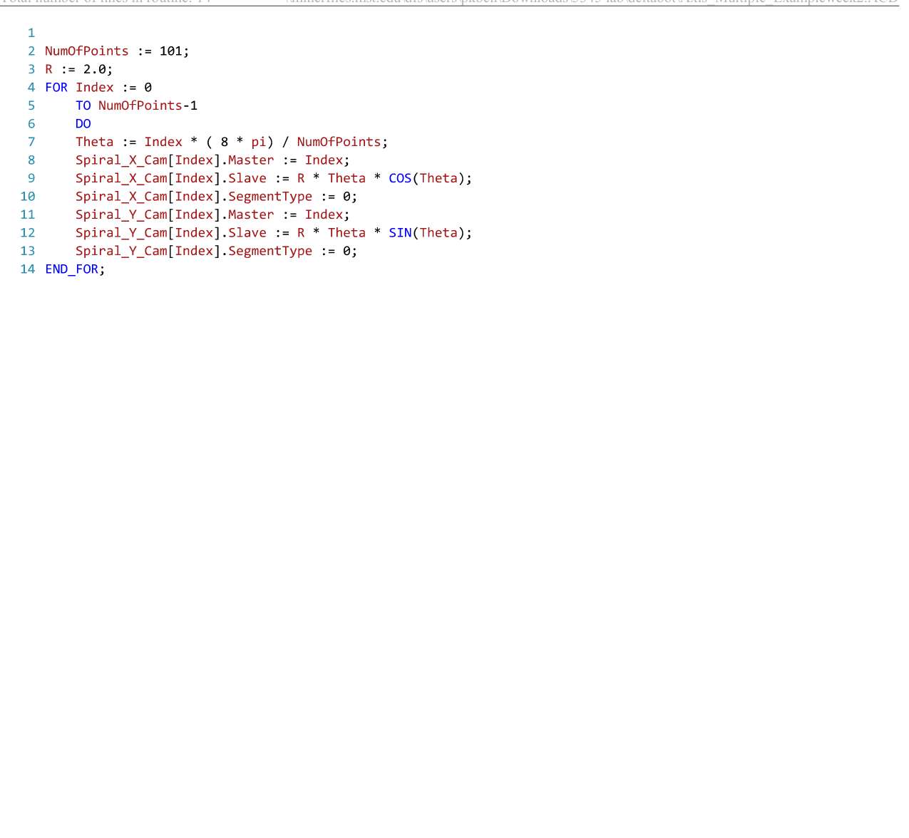
UP03_SpiralCalcPts — two parallel MCCP (Motion Calculate Cam Profile) blocks. Each takes the 101-point CAM array from UP10 and produces a CAM_PROFILE (Spiral_XCam_Pro, Spiral_YCam_Pro) that the motion planner can interpolate. The rung latches UP_Exec_StepDn_07 once both .DN bits are high.Playback — per-axis MATC in the EM
Once the profiles exist, each Cartesian virtual axis calls MATC (Motion Axis Time Cam) to play its half of the spiral. The settings are identical for X and Y:

EM05_Axis_X / CM00_Procedure, rung 5 — MATC binds Axis_05_X to Spiral_XCam_Pro. Distance Scaling = 1.0 (full-size spiral), Time Scaling = 0.15 (plays the cam in 15 % of master time — effectively ≈ 7× faster than 1 s/point), Execution Mode = Once, Schedule = Immediate, Instruction Mode = Time Driven Mode.Because MATC is time-driven, the spiral traces itself autonomously on each axis — the virtual X and Y axes share nothing but the common time base, yet produce a smooth 2D path because both cams were built from the same Theta sweep. Meanwhile Axis_04_R runs a short jog sequence in its own EM so the tool spins while the spiral draws.
5. Equipment Modules — Per-Axis CM00_Procedure
Each axis EM owns an identical CM00 pattern — 8 or 9 rungs of PackML-aware logic that map the unit step flags into motion instructions on that axis:
- Rung 0: placeholder
NOP(header). - Rung 1: on
s:fs(first scan),COPthe defaultMI_Initstruct into the working motion-instruction tag. - Rung 2: on first scan,
UP_ResettingorUP_Idle, unlatch every step bit. - Rung 3: if no step is active, latch
No_Steps_Active. - Rung 4: if
UP_ExecuteandNo_Steps_Active, seedStep_1. - Rungs 5–7: the axis's actual motion instructions (the differ per EM — see below).
- Last rung:
AFI-guarded error latch toEM_ProcedureError[EM_Number].
EM03_Axis_R — jog during the spiral (MAJ + MAS)
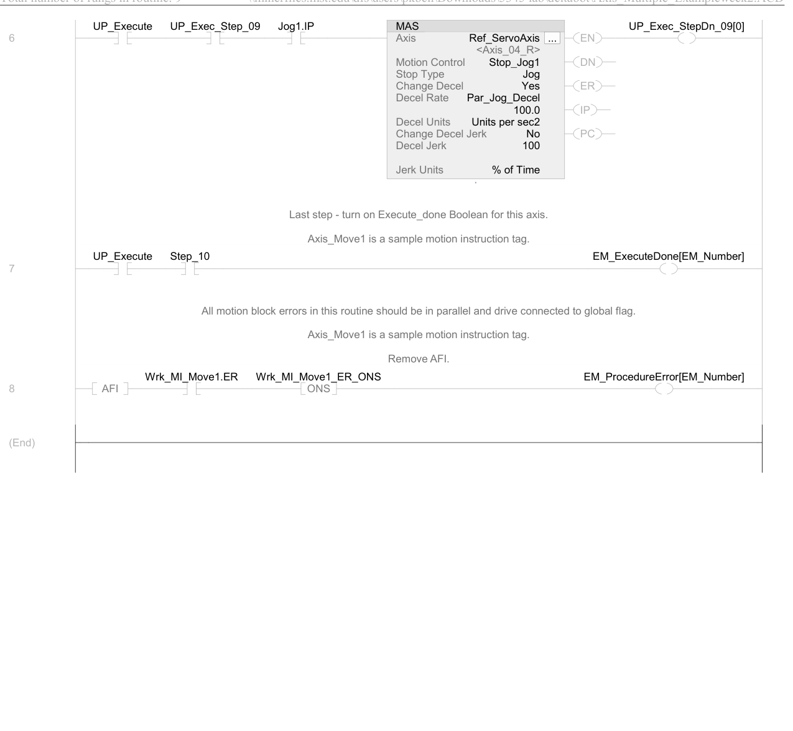
EM03_Axis_R / CM00_Procedure, rung 5 — an MAJ (Motion Axis Jog) starts the tool spinning at 0.1 units/sec with parameterized Par_Jog_Accel / Par_Jog_Decel = 100.0 units/sec², S-Curve profile, Jerk = 100 % of Time, during UP_Exec_Step_08 (while the spiral is playing on X & Y).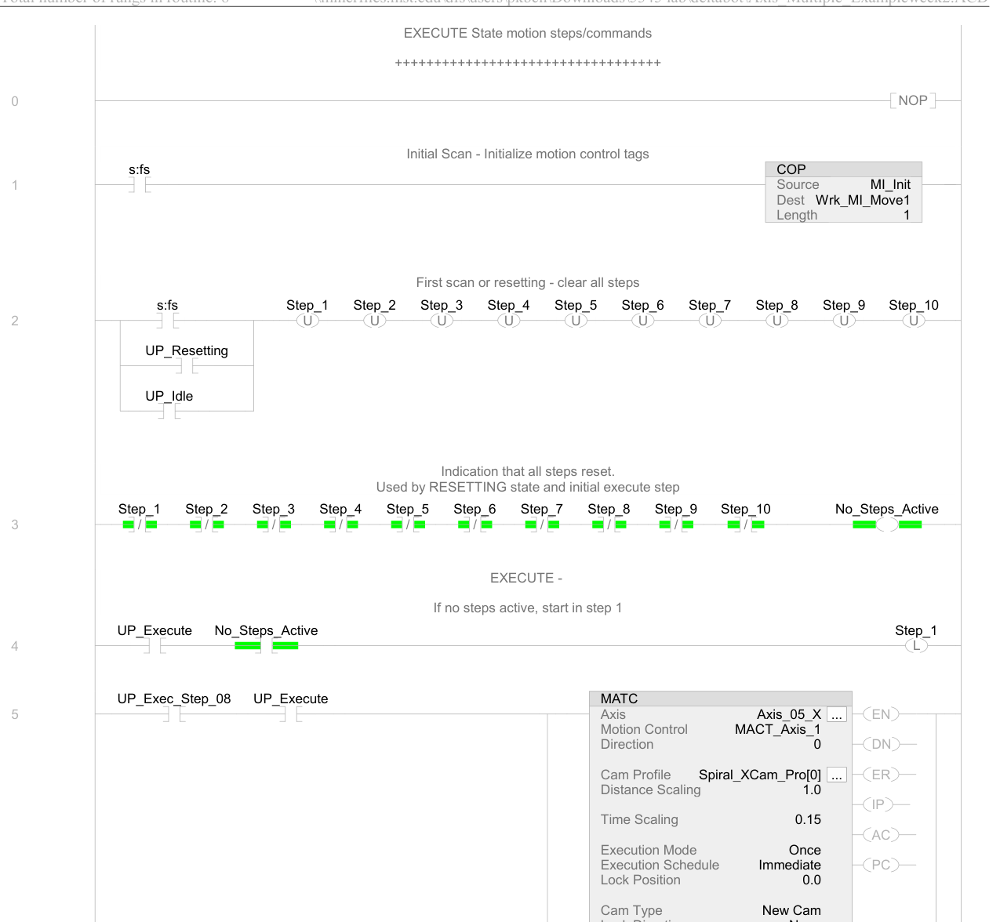
MAS (Motion Axis Stop) kills the jog at UP_Exec_Step_09, changing decel but preserving the decel-jerk, so the tool stops smoothly before the final return move.EM05_Axis_X / EM06_Axis_Y — spiral playback via MATC
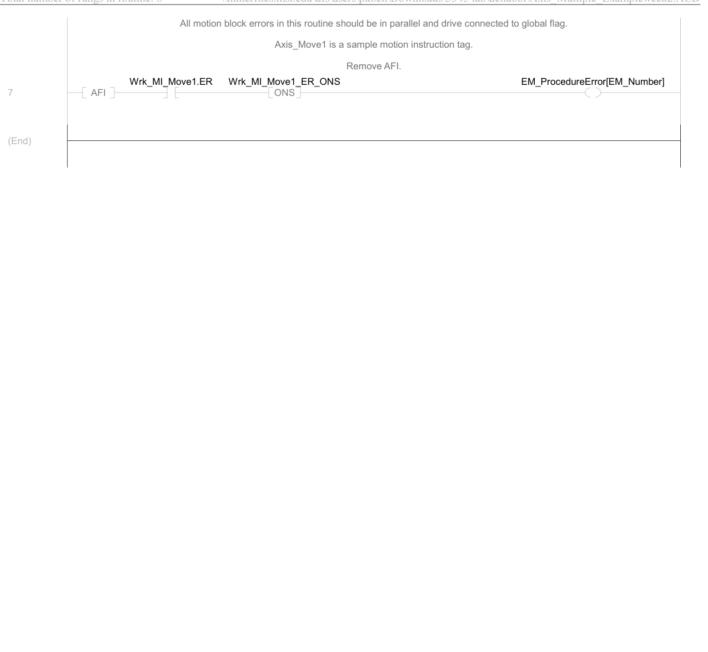
EM06_Axis_Y / CM00_Procedure — identical to EM05 but bound to Axis_06_Y and Spiral_YCam_Pro. The two EMs fire in parallel at UP_Exec_Step_08.6. The 10-Step Flowchart (delta bot.xls)
The spreadsheet captures the high-level choreography that the UP00 rungs implement:
| Step | Action | Transition |
|---|---|---|
| 1 | calculate move (MCLM1) | move complete |
| 2 | wait | waittmr.DN = 1 s |
| 3 | calculate move (MCLM3) | move complete |
| 4 | calculate move (MCLM4) | move complete |
| 5 | calculate move (MCLM5) | move complete |
| 6 | calculate move (MCLM6) | move complete |
| 7 | calculate cam (MCCP1 & MCCP2) | MCCP_1.DN & MCCP_2.DN |
| 8 | EXTRA — spiral plays, R-axis jogs | all axis step-done bits |
| 9 | calculate move (MCLM9) | move complete |
| 10 | calculate move (MCLM10) → Idle | move complete |
7. Tuning & Trend Analysis (Weeks 2 – 3)
Three trend experiments were run to visualise how accel/decel jerk shapes the Cartesian path during the 6-step linear sequence (before the spiral). Cart_Coor.ActualPosition[0..2] (X/Y/Z — at coordinate-system indices 0/1/2) are plotted against time on the same chart; a companion chart plots X vs. Z to show the projected path.
Jerk = 100 % of time (trapezoidal — fastest cycle)
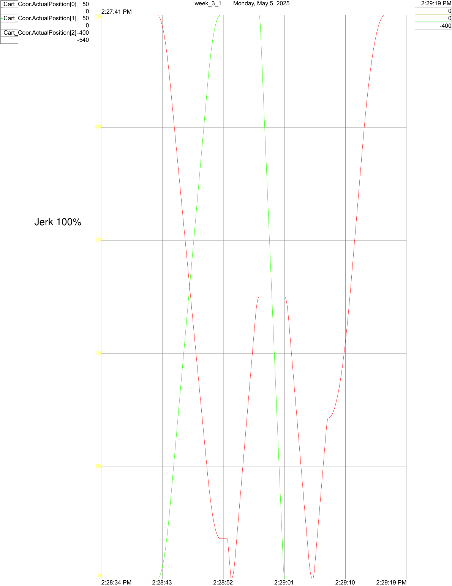
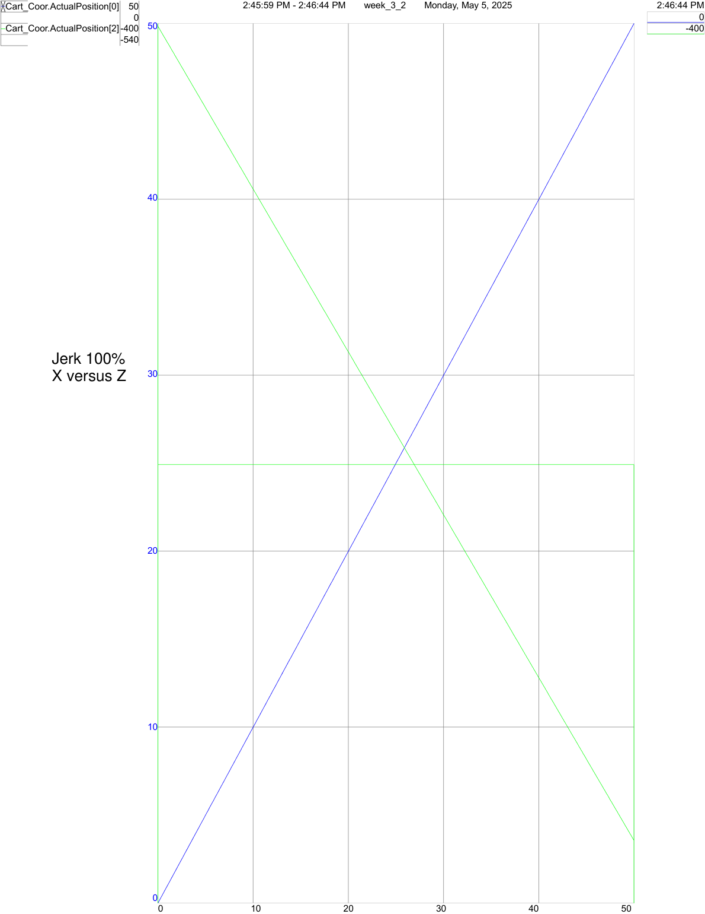
Jerk = 50 % of time (half-S, half-trap)
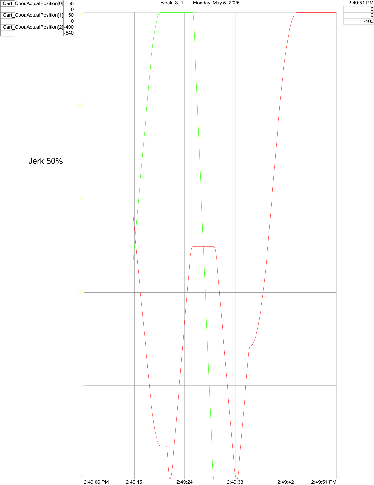
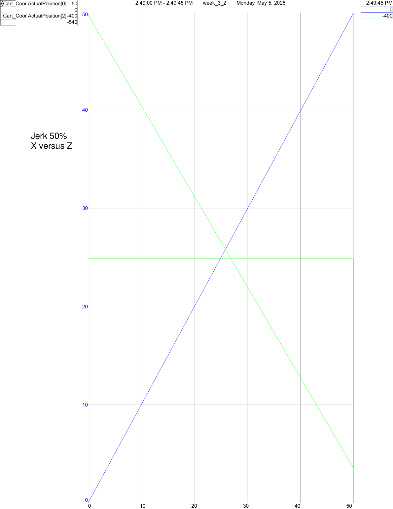
Jerk = 10 % of time (full S-curve)
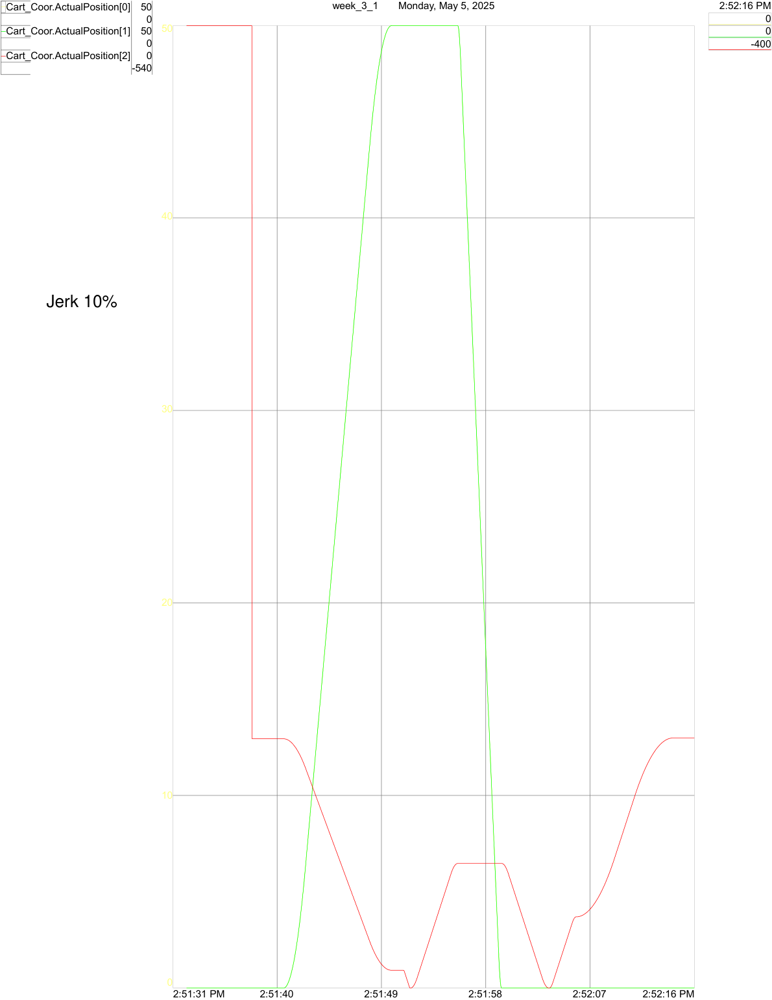
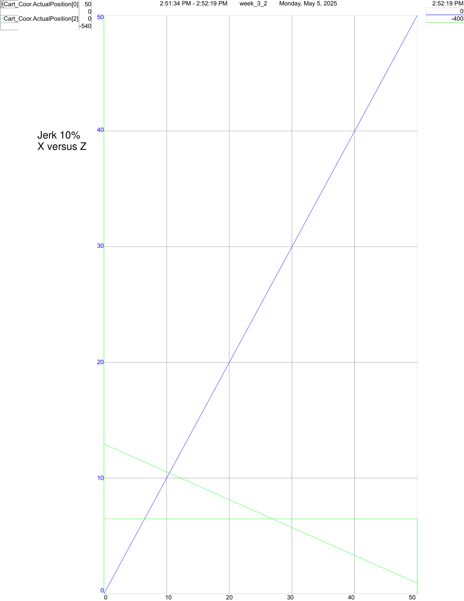
Week-3 run — with the spiral cam playing
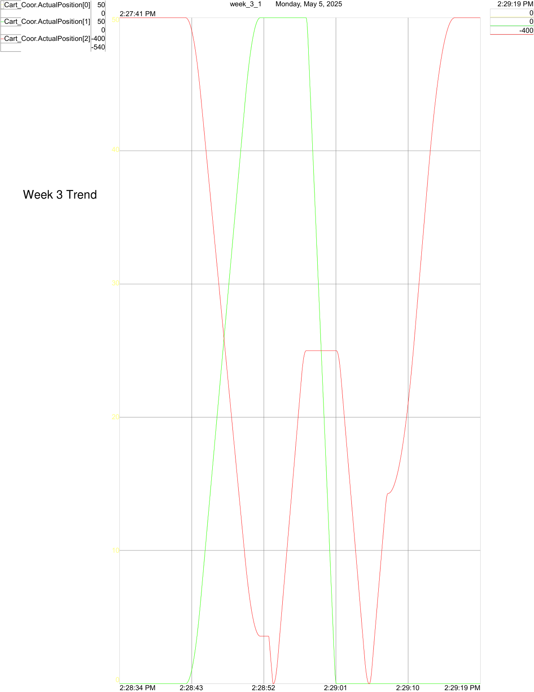
MATC on X/Y (the two ramped-sinusoid humps on the X and Y channels around the midpoint), then linear steps 9–10 to return home.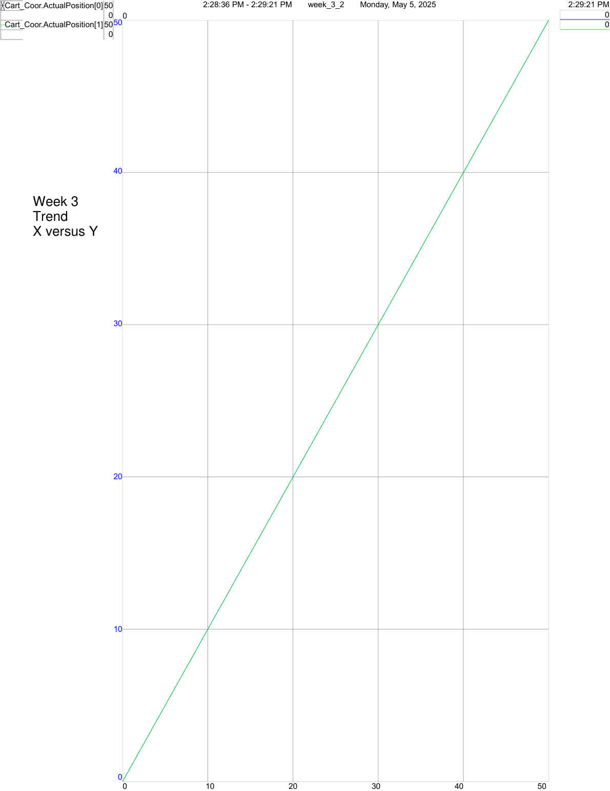
8. Engineering Takeaways
- Coordinate systems over per-axis moves. Programming moves in
Cart_Coor(withUP02_Transformdoing the delta inverse kinematics under the hood) meant the unit procedure contains pure Cartesian geometry — easier to review, simulate, and tune than seven independently choreographed joint motions. - Cam profiles for analytic paths. The 2-revolution spiral could have been streamed point-by-point, but building it once (
UP10) → converting it to a CAM_PROFILE (UP03) → playing it back withMATCat Time Scaling = 0.15 is vastly smoother and cheaper per scan. - Live-computed accel. Computing
accel = MoveSpeed² / (½·mean-distance)at every step makes the procedure position-robust: homing offsets or operator jogs don't break the ramp. - PackML in every module. The
UP_Idle/UP_Execute/UP_Resettingflags appear in every EM's CM00, so each axis independently agrees with the unit on when to start, stop, or clear steps. This is what lets the R-axis jog and the X/Y cams fire in parallel without cross-contamination. - Jerk is the production knob. The three trend sets (100 %, 50 %, 10 %) show jerk is the first-order lever for mechanical stress on a delta — more useful to vary than speed itself.